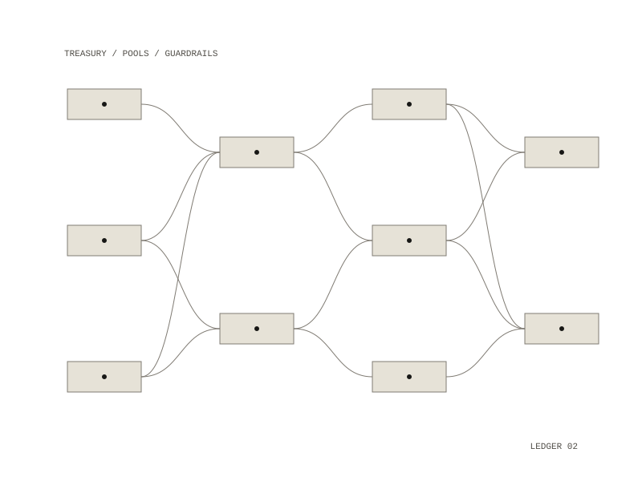

Cryptoagent
Cryptoagent is a treasury agent. It starts from a stablecoin balance and tries to grow net asset value on a risk-adjusted basis through on-chain yield (lending, staking, restaking, fixed yield, delta-neutral funding and slow rotation between rates) under fixed guardrails. By default a deterministic rules operator allocates the capital with no model and no key, so every run can be reproduced; a model can be switched in when exploratory judgment is wanted.

Each tick
- mark open positions to market and record net asset value
- harvest or compound accrued yield where it pays to
- scan the allowlisted pools
- deploy or rotate idle cash into the best risk-adjusted pools, within the caps
An overseer reviews each tick for exposure, concentration and drawdown, and a tick that makes no real progress triggers a back-off. Net asset value is idle stablecoin plus the marked value of open positions, so deploying capital moves money between the two without changing the total.
Guardrails
Every money-moving tool passes a gate that enforces the limits in code. Capital can only go into a pool that was actually scanned and whose protocol, chain and asset are all on the allowlist. Pools with implausible yields or thin liquidity are rejected, positions are capped against net asset value with an idle reserve and a maximum exposure, and a drawdown circuit breaker halts all new deployment. On mainnet, every irreversible action is designed to wait in a queue for a person to approve it.
The agent never handles a signing key: no tool takes a key as an argument, so it never enters the prompt, the action log or the database. Contract addresses come from code, never from the model; the agent picks a pool and code resolves where the money goes. It runs on an internal Docker network whose only way out is a proxy that blocks every host not on its list, inside a read-only, non-root container with all capabilities dropped.
The fleet tournament
Instead of hand-tuning one configuration, a tournament runs many variants through a simulated market where each strategy has a mean yield, volatility and tail risk, so high-yield setups can fail. Each variant is scored across many random scenarios on return less drawdown plus a bad-case percentile; the best are kept and mutated over several generations. The variants use the real tools and gate, so the caps bind as they would in a live run, and selection tends toward diversified, conservative books and away from leverage.
Arbitrage, measured
A separate read-only scanner prices gaps between venues after fees, slippage, gas, transfer and latency, storing each cost on its own; nothing is signed and nothing executes on mainnet.
a deterministic rules operator by default; a model is optional
runs against a simulated venue; testnet, and mainnet with human approval, are designed in
Python and SQLite in Docker, with network egress limited to an allowlist